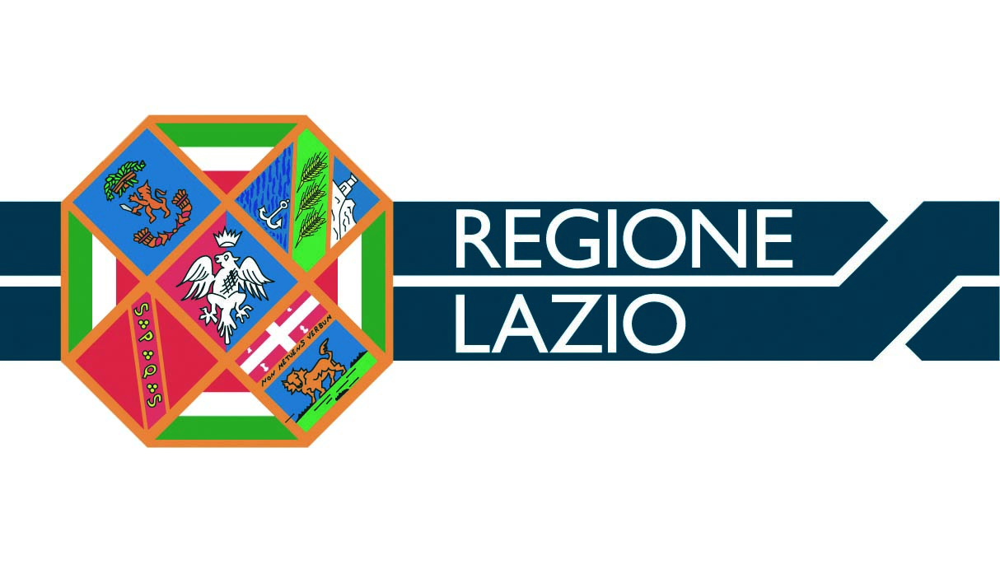
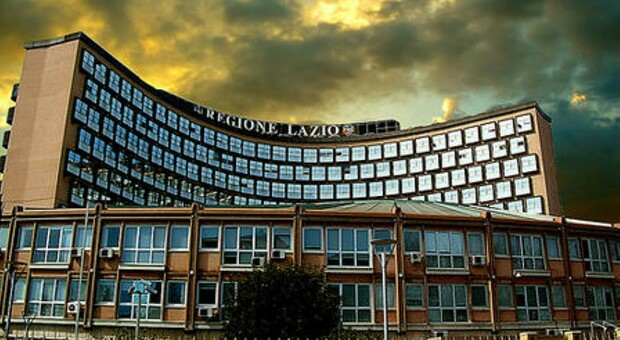

Il Lazio è una regione dell'Italia centrale affacciata sul Mar Tirreno.
Il suo capoluogo, Roma, è capitale d'Italia ed è stato il cuore dell'antico Impero romano.
Tra i suoi monumenti iconici si annovera il Colosseo, un anfiteatro che poteva ospitare migliaia di spettatori.
Sulla costa, l'antico porto di Ostia conserva ancora raffinati mosaici e un teatro.
Nell'entroterra si trovano le boscose montagne degli Appennini, con riserve naturali, laghi e paesini in pietra.
